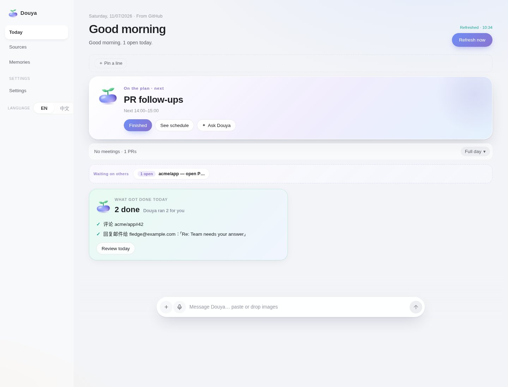
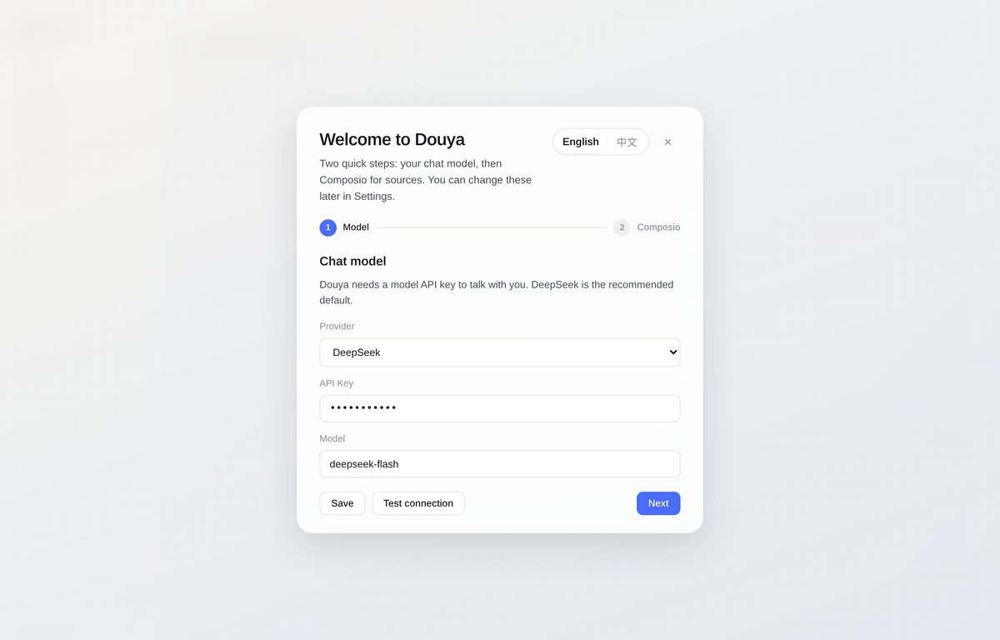

Today
今日
Aggregates mail, GitHub, Slack, and calendar into one daily page: a suggested next step, a timetable, digest cards, and what already got done.
把邮件、GitHub、Slack 和日程汇总到一页：建议的下一步、日程表、摘要卡片，以及已经完成的事项。
Douya / 豆芽 runs on Windows, macOS, and Linux. It brings today’s mail, GitHub, Slack, and calendar onto one page, keeps memory on your machine, and asks before anything goes outbound.
豆芽运行在 Windows、macOS 和 Linux 上。它把今天的邮件、GitHub、Slack 和日程放在同一页，记忆留在本机，对外操作会先征得你的同意。

The packaged app already includes the server and dsh. No git checkout, Node.js, or separate dsh install.
安装包已内置服务和 dsh。不需要再克隆仓库，也不必单独安装 Node 或 dsh。
Current release: desktop-v0.1.0. Verify with SHA256SUMS.
当前版本：desktop-v0.1.0。校验文件见 SHA256SUMS。
macOS is ad-hoc signed (right-click Douya.app → Open). Windows is self-signed (SmartScreen: More info → Run anyway). Linux packages are unsigned. The AppImage needs libfuse.so.2, or run with --appimage-extract-and-run. Do not pass --no-sandbox.
macOS 为临时签名（右键 Douya.app → 打开）。Windows 为自签名（SmartScreen：更多信息 → 仍要运行）。Linux 包未签名。AppImage 需要 libfuse.so.2，或加 --appimage-extract-and-run。不要加 --no-sandbox。
If no chat model is saved yet, a two-step wizard opens. You can also find it in Settings.
如果还没有配置聊天模型，会打开一个两步向导。以后也可以在设置里再改。
Outbound mail, comments, and archives stay pending until you click Confirm.
对外发信、评论和归档会先挂起，等你点「确认」。

Aggregates mail, GitHub, Slack, and calendar into one daily page: a suggested next step, a timetable, digest cards, and what already got done.
把邮件、GitHub、Slack 和日程汇总到一页：建议的下一步、日程表、摘要卡片，以及已经完成的事项。
Talk with Douya from the dock or a card. Prepared outbound actions wait for an explicit Confirm.
从底部对话栏或卡片里和豆芽聊天。准备好的对外操作会等你明确确认。
Local long-term memory via the official MCP Memory server — a JSONL knowledge graph on disk, no embeddings. Achievements surface first. Forget removes an observation or an entity. Photo attachments are not supported.
用官方 MCP Memory 在本地记长期记忆：磁盘上的 JSONL 知识图谱，不做向量嵌入。成就会排在前面。「忘记」可删掉一条观察或整个实体。暂不支持给记忆配图。
Propose a plan from a memory or a stated interest; you accept before work starts. Tick a step, or complete one with Douya. Progress survives a restart.
根据一段记忆或你说出的兴趣拟定计划，先征得同意再开始。可以勾掉一步，也可以和豆芽一起完成。进度重启后还在。
Your data stays on this machine, under the app’s user directory — ~/Library/Application Support/Douya on macOS, %APPDATA%\Douya on Windows, ~/.config/Douya on Linux. That includes config, the memory file, and the local runtime home. Nothing is written into the install folder. The UI binds to 127.0.0.1.
数据留在本机用户目录：macOS 为 ~/Library/Application Support/Douya，Windows 为 %APPDATA%\Douya，Linux 为 ~/.config/Douya。配置、记忆文件和本地运行时都在这里，不会写入安装目录。界面只绑定 127.0.0.1。
Chat and many features still call the model provider you configured. Connected sources go through Composio, and nothing is sent outbound until you consent. Douya is not a fully offline product.
聊天和不少功能仍会调用你配置的模型服务。连接外部应用走 Composio，对外发送需你同意。豆芽不是完全离线的产品。
From a source checkout:
从源码运行：
npm install npm start # → dsh --profile odm --port 7777 open "$(cat .odm-data/dsh-web.url)" # token URL; bare :7777 returns 401
Run npm test, branch from main, and open a PR. Never push main directly. More in the README and docs/develop.md.
运行 npm test，从 main 拉分支并开 PR。不要直接推 main。详见 README 和 docs/develop.md。